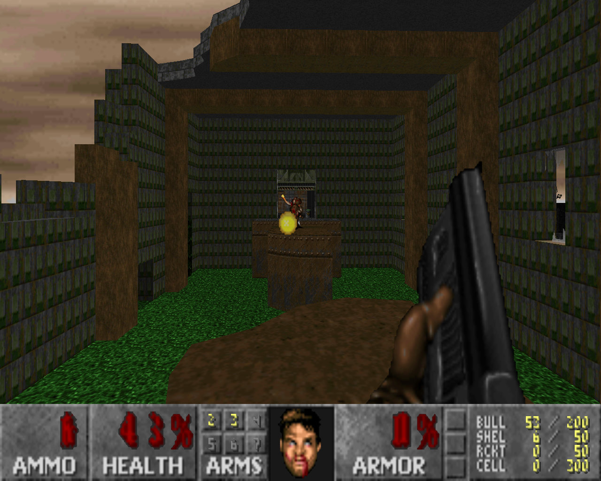
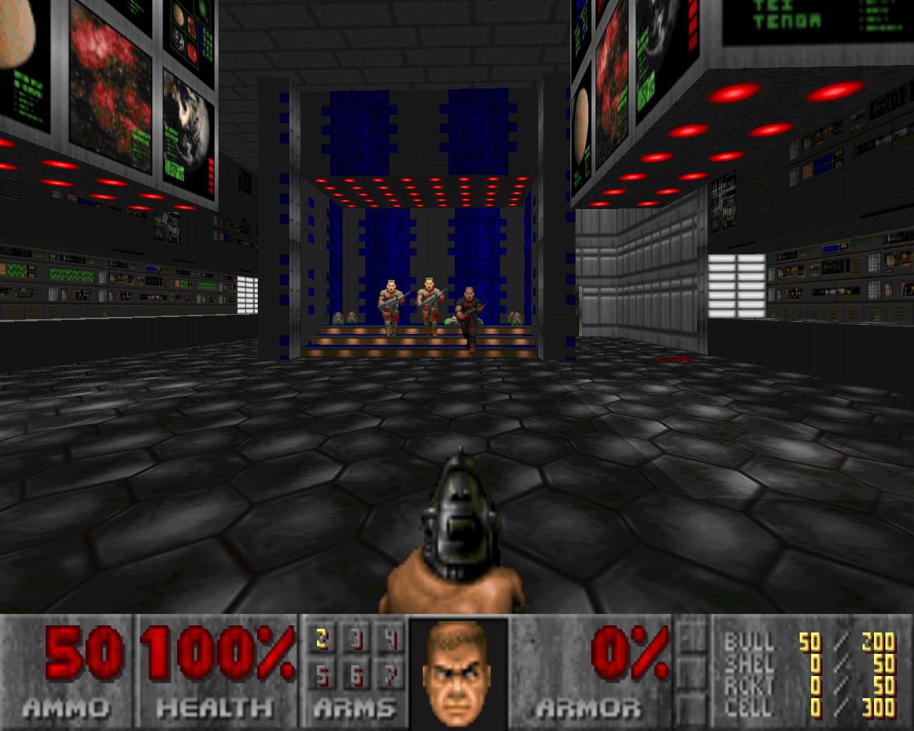
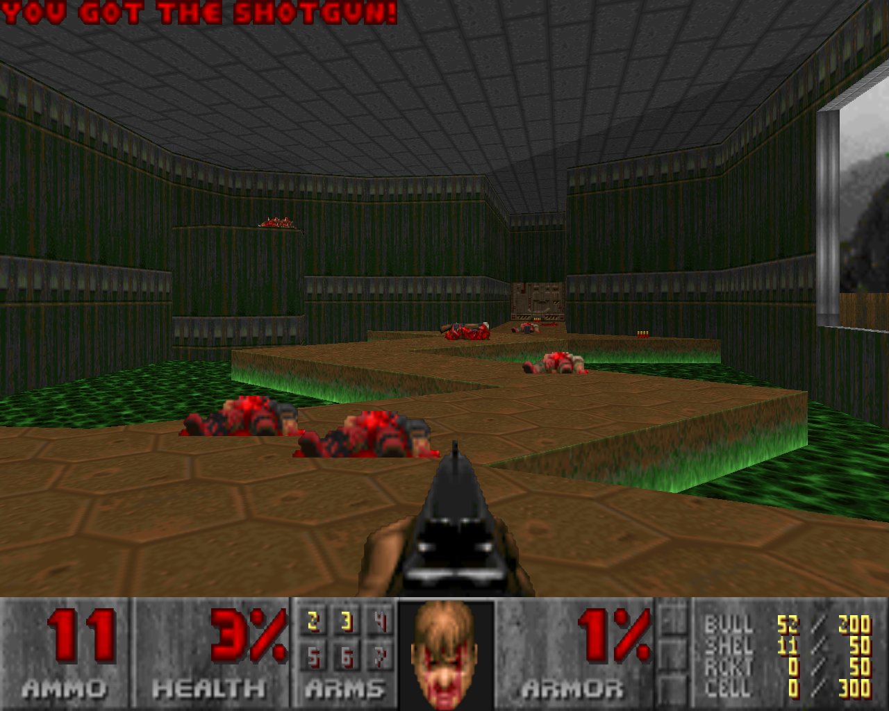

Продолжая тему запуска старых игр от id Software в Linux, хочу написать о PrBoom. PrBoom - это свободный движок игры Doom. У меня в Debian эта игра запускалась со звуком, но почему-то без музыки. Как оказалось, исправить этот недостаток довольно просто.
Во-первых, ставим пакет timidity:
# aptitude install timidity
Во-вторых, вносим в файл /etc/default/timidity следующие изменения:
TIM_ALSASEQ=true
В-третьих, перезапускаем MIDI-секвенсор:
# /etc/init.d/timidity restart
В каталоге /dev/ должно появиться устройство midi:
$ ls -la /dev/midi crw-rw---- 1 root audio 14, 2 Окт 17 17:29 /dev/midi
Нужно убедиться, что пользователь который будет запускать игру, будет иметь доступ к этому устройству. Для этого пользователя достаточно включить в группу audio и при необходимости завершить сеанс и войти снова.
После всех этих действий prboom всё равно не воспроизводил музыку и я обратился к страницам руководства. После непродолжительного чтения, я узнал что все настройки prboom'а находятся в файле ~/.prboom/prboom.cfg.
Поиск по файлу конфигурации слова music дал следующие две опции: music_card, music_volume.
Опция music_card располагалась под опцией sound_card, но в отличие от неё имела другое значение:
sound_card -1 music_card 0
После того, как я заменил значение опции music_card на -1, музыка заработала.
В игре можно включить использование OpenGL и задать размер экрана (смотрите настройки в меню игры и конфигурационный файл). Спрайты объёмными от этого не станут, но качество картинки станет лучше.
Чтобы поиграть в оригинальный Doom, нужно взять от игры для DOS файл с расширением WAD и указать PrBoom'у использовать его. Например вот так можно запустить первый Doom:
$ prboom -IWAD DOOM.WAD
Игра хоть и старая, но кто однажды стал её фанатом, тот её никогда не забудет. Я умею играть на сложности Ultra Violence пользуясь только лишь одной клавиатурой. Да и тем, кто её никогда не видел, может понравиться, если не рассматривать её как замену более поздним играм, а относиться к ней как какой-нибудь казуальной игре вроде тетриса или зумы.
Ну и напоследок, несколько скриншотов.
FreeDoom:
Doom Ultimate E1M1. Перед входом в первую мясорубку:
Doom Ultimate E1M1. После выхода из мясорубки осталось мало здоровья - или бейся или фоткай:
